How a self-organizing map learns hierarchical chunks from a stream of symbols — no background needed
Laboratory of Intelligent Systems, Kyushu University · October 2026 The detailed version for SyncMap readers is docs/presentation/index.html in github.com/Cyletix/SyncMapRGCI
Plan
Four questions
1 · Why group a sequence at all?
People do it constantly, and babies learn words this way.
2 · What exactly is the task?
A hidden graph, a random walk, and groups to recover without labels.
3 · How does SyncMap do it, and what does RG add?
Points that move like magnets; then the same trick repeated one level up.
4 · Does it work?
A fair comparison of five methods: where RG helps, where it does not, and what it costs.
PART 1
Why chunks?
A long stream becomes manageable once it is cut into pieces that repeat.
Everyday chunking
We cut sequences into pieces without thinking
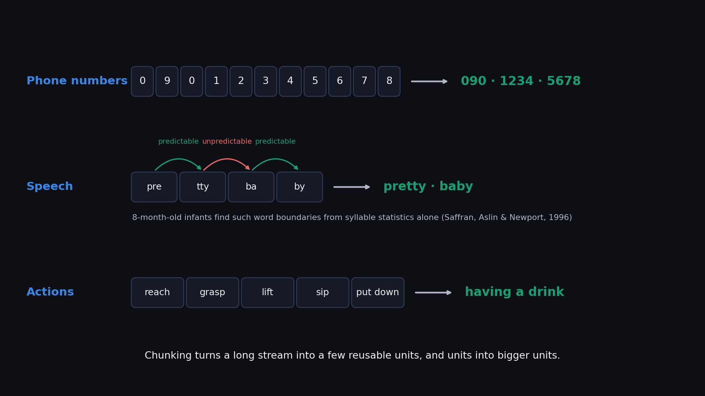
The task
The task as a game: recover the groups from the order alone
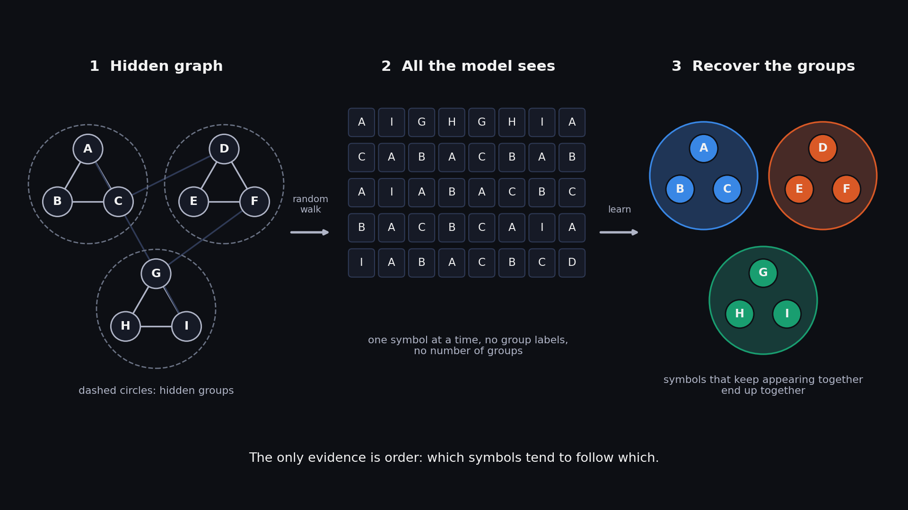
Hierarchy
Groups inside groups
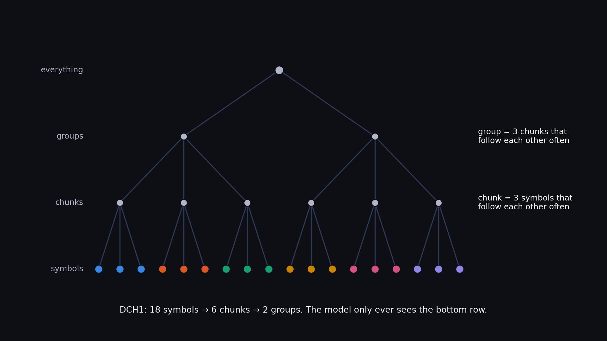
Difficulty
Why this is hard
No labels
Nobody tells the model which symbols belong together; there is nothing to train against.
Unknown number of groups
The model must decide by itself whether there are 2 groups or 20.
Each level has its own scale
Chunks are small and tight, groups are large and loose. One distance cannot describe both.
Groups mix
The walk also crosses between groups, so the boundaries are statistical, not sharp.
The third point turns out to be the central one.
The key difficulty
The hard part is choosing the scale, not the clustering method
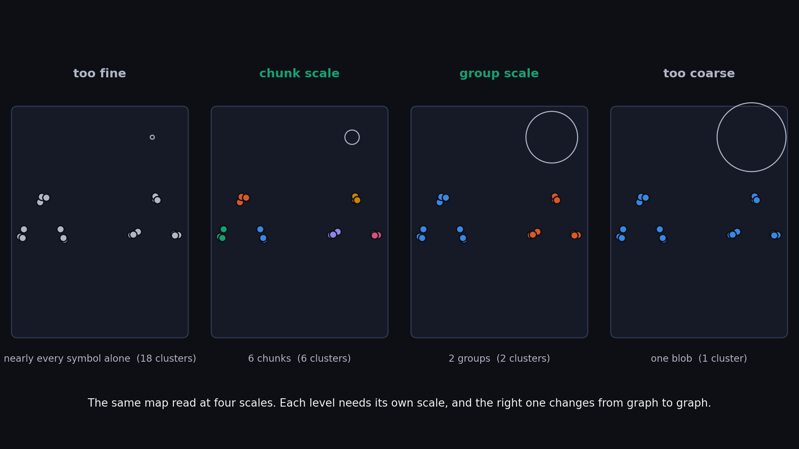
Swapping the clustering method does not fix this: Louvain was much slower than DBSCAN and not better in general.
In our experiments, even when the map already contained the groups, picking the cut scale cost 0.07–0.40 of the score.
PART 2
The idea
SyncMap in one sentence, its limit, and what RG adds.
SyncMap
SyncMap: what occurs together attracts
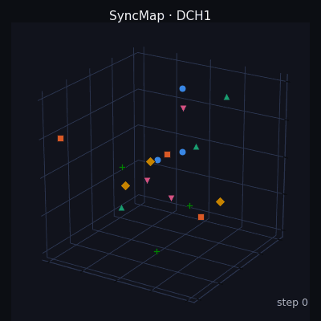
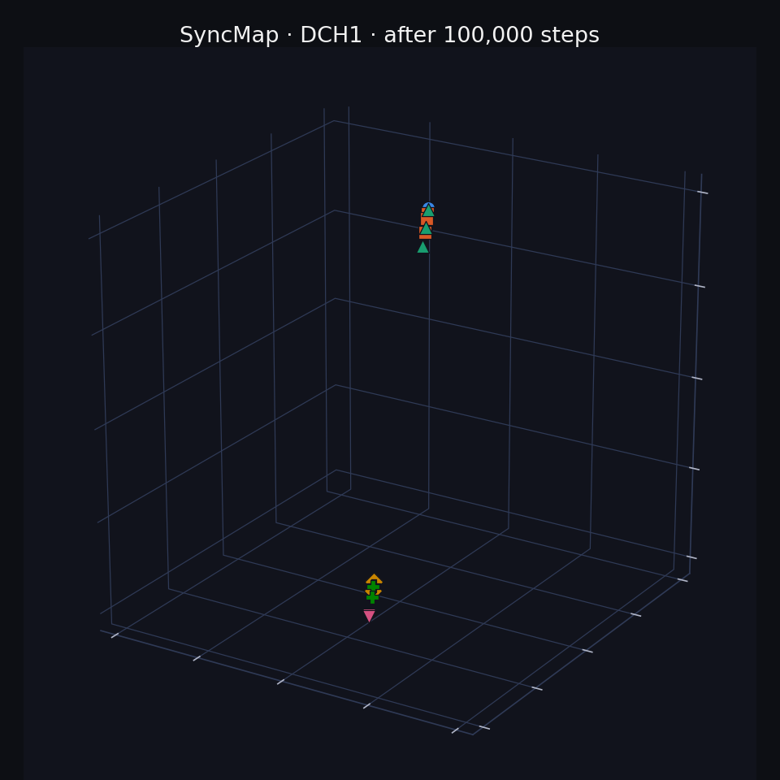
Each symbol is a point in a small 3-D space.
Whenever symbols appear together, their points move toward each other; the points that did not appear move apart.
Like magnets settling: after many steps, points that often occur together sit close together.
A clustering step then reads the clumps as groups.
No loss function and no backpropagation: just simple forces applied again and again.
Vargas & Asabuki, AAAI 2021. SyncMap on DCH1 (animated on screen, final map in print); colours = true chunk, shown for viewers only.
The limit
One map, one scale: hierarchies come out half right
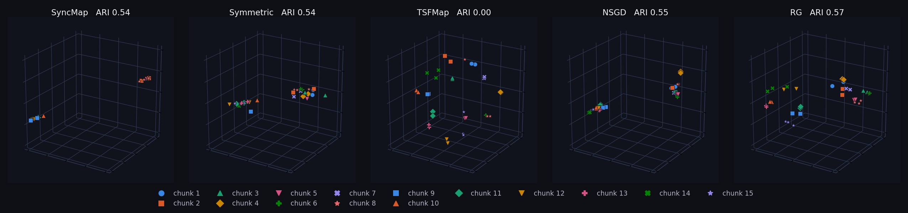
SyncMap, Symmetric and NSGD get the two big groups but merge most of the 15 small chunks inside them.
TSFMap does the opposite: it separates the chunks but spreads them evenly over a sphere, so the two groups disappear.
RG
RG: treat each chunk as a new symbol and repeat, one level up
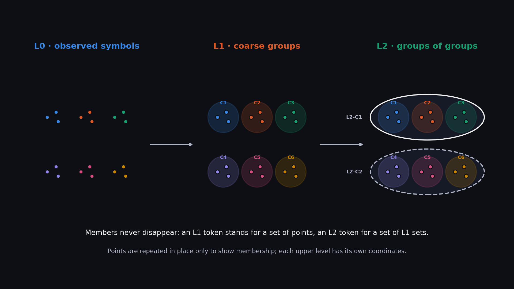
Level 0 runs the SyncMap-style dynamics on the symbols and finds chunks.
Each stable chunk becomes a new symbol; the chunk sequence feeds the same dynamics one level up, at a larger scale and a slower pace.
Like zooming a map out: streets, then districts, then cities, each at its own scale.
PART 3
How we check
A score for a grouping, and a fair way to compare methods.
Scoring
Scoring a grouping: ARI, from 1 (perfect) down to about 0 (chance)
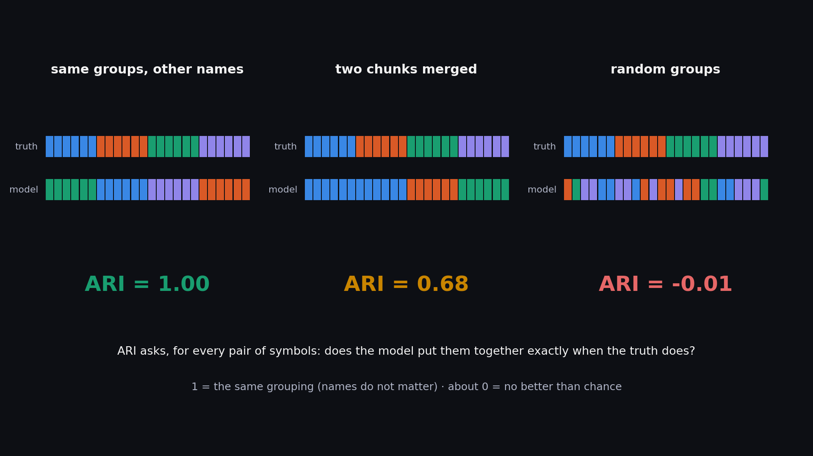
For a hierarchy we score every level separately and take the average.
A fair test
Five methods, the same input, the same reading step
Every method reads the same 100,000-symbol sequence.
Every experiment is repeated with 5 different random walks; we report the average and the spread.
The same reading step turns every method's map into groups; the true labels are used only for the score.
To see what the recursion itself does, we also ran RG with the recursion switched off and compared.
Method
In one line
SyncMap
the original (2021)
Symmetric
SyncMap variant for uneven group sizes
TSFMap
related dynamics with a built-in hierarchy reader
NSGD
my earlier, strongest single-level method
RG
this work: the recursive version
PART 4
What we found
No universal winner — but a clear place where RG helps, and a clear reason why.
Overall
Eight test graphs: no single winner
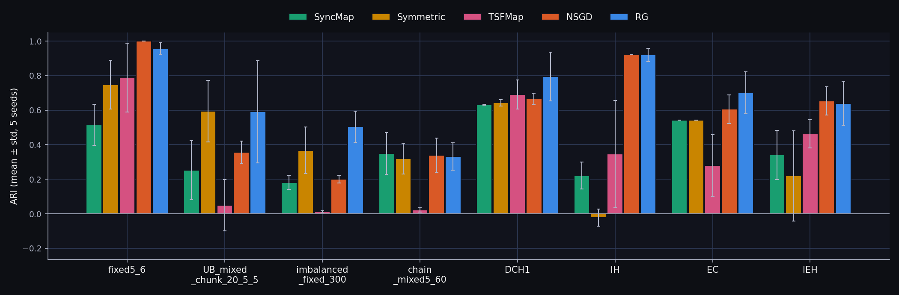
RG is best on 3 graphs, NSGD on 3, the others on 1 each; several "wins" are within the spread of the repeats.
On these small hierarchies most methods find the big groups; RG's lead comes from the small chunks inside them.
Where RG wins
When the big groups mix, NSGD loses them and RG keeps them
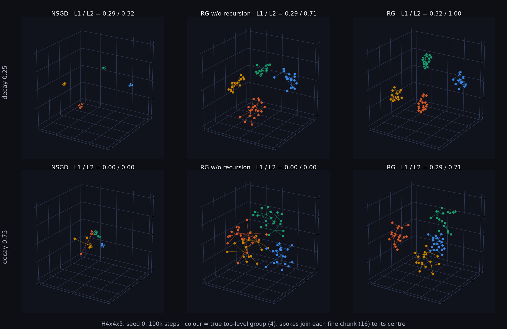
80 symbols in 16 chunks inside 4 big groups (colours). Top row: big groups well separated (decay 0.25). Bottom row: big groups mixed (decay 0.75).
Why
The recursion is what helps
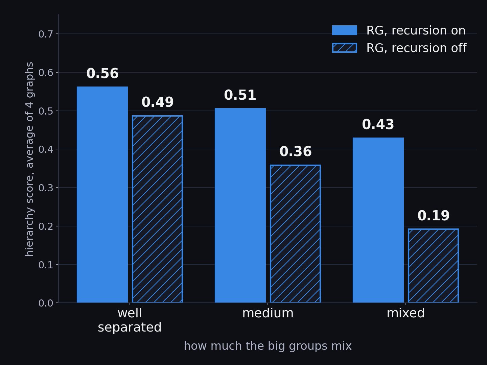
Same method, same data, recursion switched off: worse in all 12 tests (4 graphs × 3 mixing levels).
The gap grows as the groups mix: from less than 0.1 to about 0.24 on average.
Without the recursion, RG collapses on the larger mixed graphs just like NSGD.
Honest limits
What it costs, and where it does not help
Slower
RG takes about 3–4× NSGD's time on flat graphs and 10–20× on hierarchies, because it runs several levels.
Not everywhere
With many small groups (e.g. 60 groups of 5) NSGD is perfect and RG is weak; NSGD also wins a three-level graph with clearly separated levels.
The reading step
Turning a map into groups still loses 0.07–0.40 of the score for every method.
Toy data
Only synthetic random walks so far; no images or video yet, and the deepest levels get too little input in 100,000 steps.
Next
Where this is going
Better reading step
Pick the cut scale from groups that stay stable over time, so less of the map's structure is lost.
Causality between chunks
Once chunks are found, ask which ones cause which: the CI part of the project.
Real data
Move from symbol streams to visual event sequences: the long-term research theme.
Summary
Three things to remember
Grouping a sequence without labels is mostly a question of scale: each level of a hierarchy needs its own.
RG repeats SyncMap's simple attract-and-repel rule one level up, treating each chunk as a new symbol.
That recursion is what keeps mixed groups apart; it costs time and does not win everywhere.
Detailed deck: docs/presentation/index.html · code and results: github.com/Cyletix/SyncMapRGCI
BACKUP
Details on request
Results in full, inside RG, glossary, where to find everything.
Flat graphs
Few large groups favour RG, many small groups favour NSGD
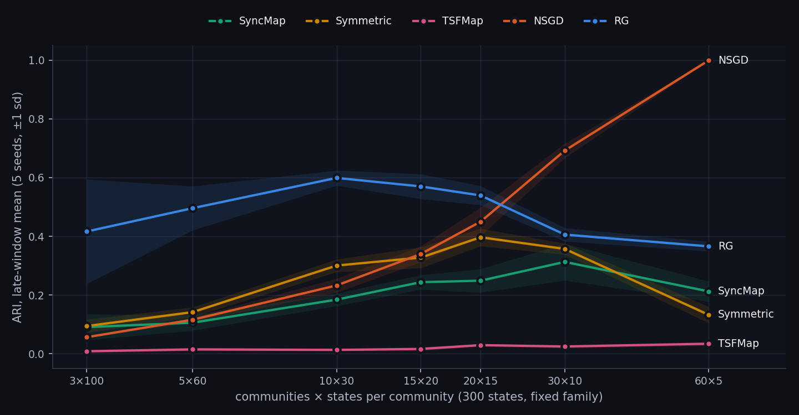
Hierarchies
Four hierarchies, three mixing levels
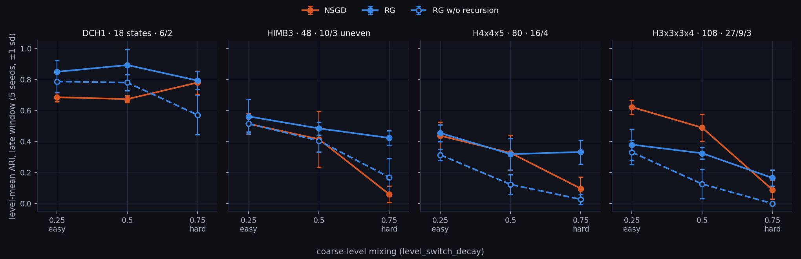
Inside RG · 1
Remembering which symbols follow which
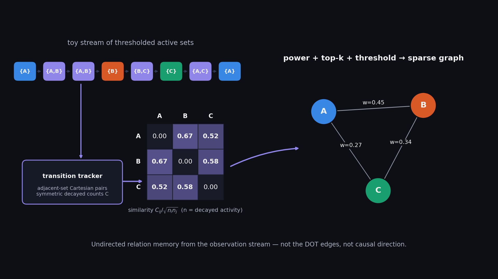
Inside RG · 2
Springs with a preferred length
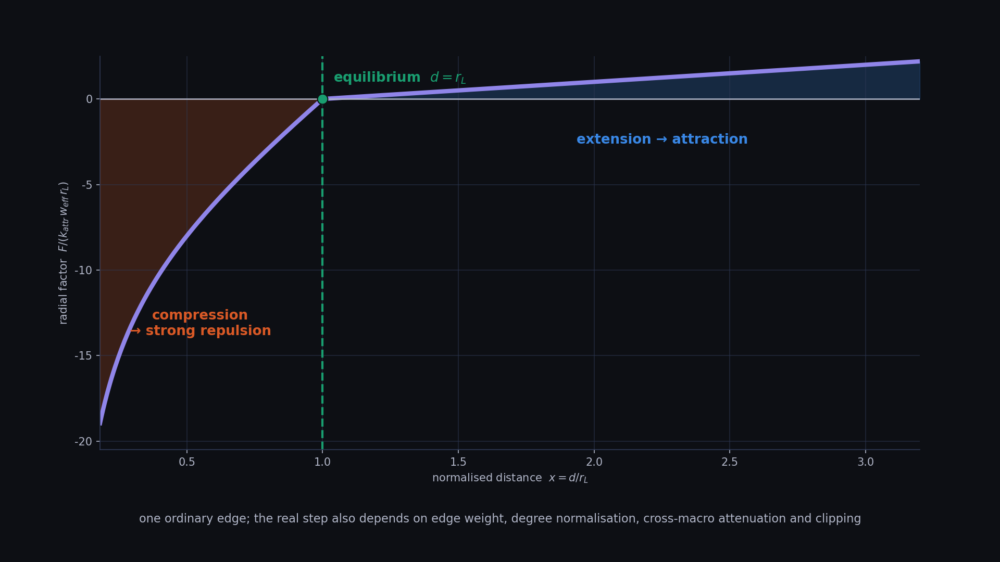
Inside RG · 3
Each level 3.16× larger and slower
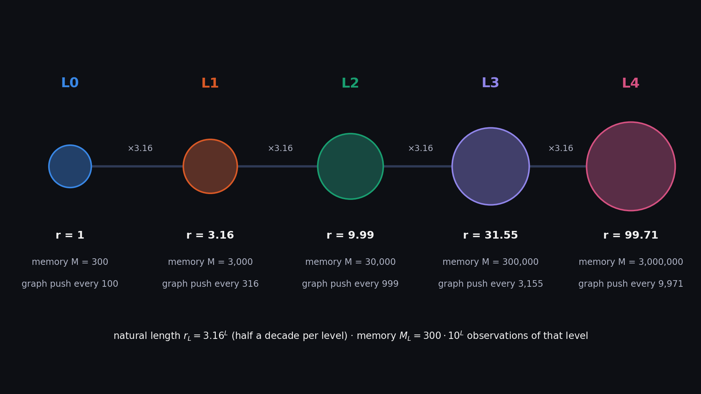
Inside RG · 4
Keeping big groups apart
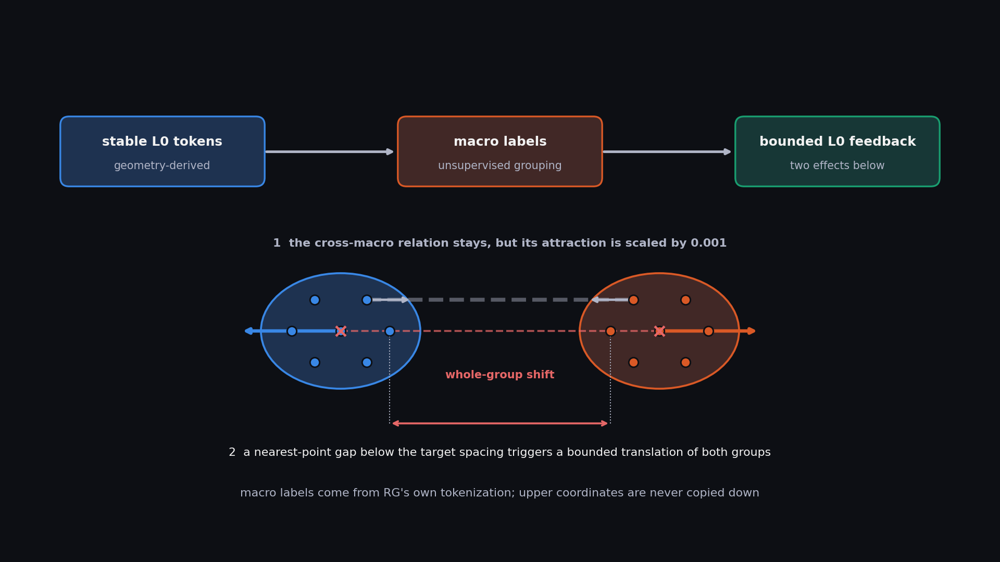
Glossary
Words used in this project
Word
Meaning here
chunk
a group of symbols that follow each other often
hierarchy, level
chunks grouped again into bigger groups; each grouping step is a level
map, latent space
the 3-D space where every symbol is a point
reading step (readout)
turning the map into groups, e.g. with DBSCAN
ARI
agreement between two groupings: 1 identical, about 0 chance
seed, repeat
one random walk; we use 5 and average
recursion
feeding the found chunks back in as new symbols, one level up
mixing
how often the walk jumps between big groups
Where to find everything
Code, data and reports
Repository: github.com/Cyletix/SyncMapRGCI (README also in Chinese and Japanese).
Detailed presentation: docs/presentation/index.html; both decks also as PDF on the releases page.
Benchmark of the five methods: results/benchmark/REPORT.md, with training animations.
Harder tests and the recursion comparison: results/supp/REPORT.md.